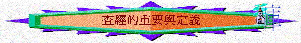

引言:你認為帶領少年人查經，難不難? 難在甚麼地方? 但又值不值得編排查經聚會給與少年人? 為甚麼?
一.查經的定義
1.本於聖經
「
保羅照他素常的規矩進去，一連三個安息日，本著聖經與他們辯論，」徒17:2
2.一同查考
A.細察探究
「 你們查考聖經（或譯：應當查考聖經），因你們以為內中有永生；給我作見證的就是這經。」約5:39
∼查考的原文ereunao有細察、搜尋及查考探究意思
B.仔細檢驗
「 這地方的人賢於帖撒羅尼迦的人，甘心領受這道，天天考查聖經，要曉得這道是與不是。」徒17:11
「治民的官府和長老啊，倘若今日因為在殘疾人身上所行的善事查問我們他是怎麼得了痊癒，」徒4:9
∼考查的原文是anakrino有仔細質問及檢驗意思
C.作出判斷
「 我被你們論斷，或被別人論斷，我都以為極小的事；連我自己也不論斷自己。我雖不覺得自己有錯，卻也不能因此得以稱義；但判斷我的乃是主。」林前4:3-4
∼anakrino有判斷及審明意思
D.求問研究
「 以斯拉定志考究遵行耶和華的律法，又將律例典章教訓以色列人。」拉7:10
∼考究的希伯來文daw-rash，有求問、詢問，研究的意思
二.重要
1.價值
A.分辨真偽
「 這地方的人賢於帖撒羅尼迦的人，甘心領受這道，天天考查聖經，要曉得這道是與不是。」徒17:11
B.得著永生
「你們查考聖經（或譯：應當查考聖經），因你們以為內中有永生；給我作見證的就是這經。」約5:39
C.生活蒙福
「遵守他的法度、一心尋求他的，這人便為有福！」詩119:2
∼尋求也可譯考究，原來人考究神的訓詞時，那人便為有福！
D.生命更新
「我要自由而行（或譯：我要行在寬闊之地），因我素來考究你的訓詞。」詩119:45
2.好處
A.經過自已的判斷→更堅定相信
B.經過自已的研究→更深刻記得
C.經過自已的提問→更熄除疑惑
D.經過眾人的討論→更多客觀性
E.經過實際的應用→更切身處地